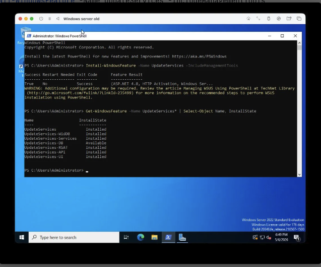
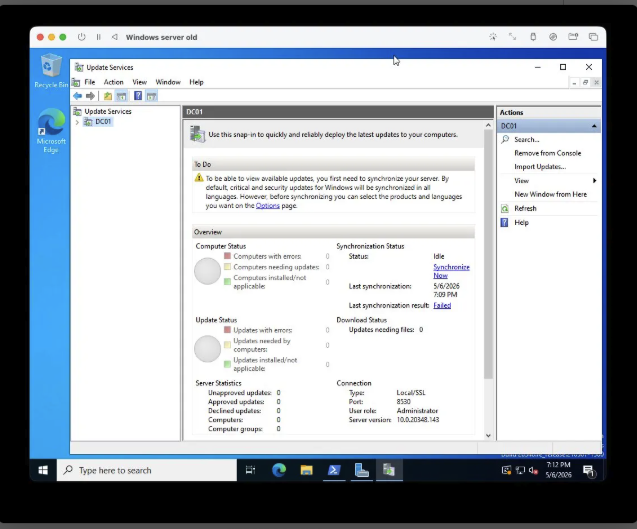
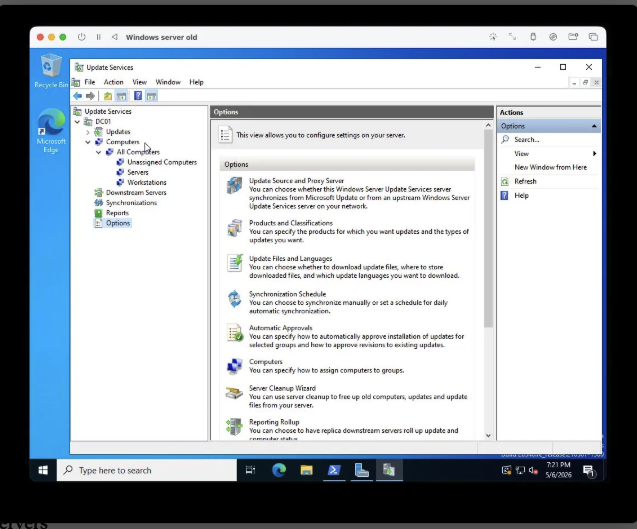
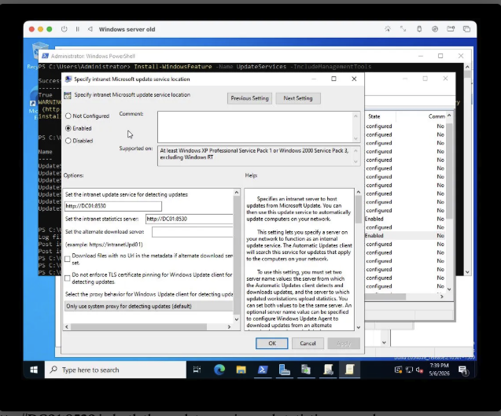
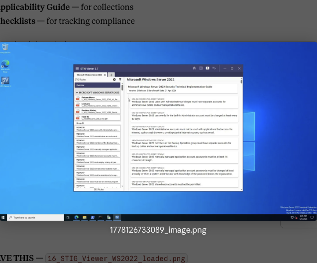
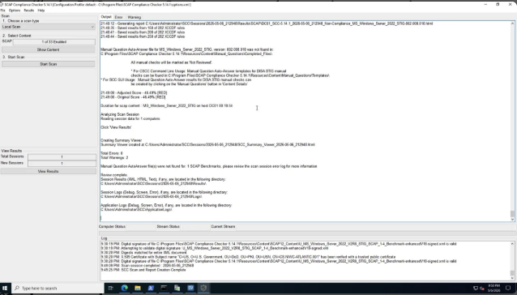
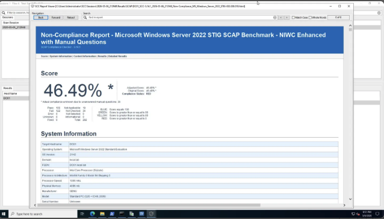
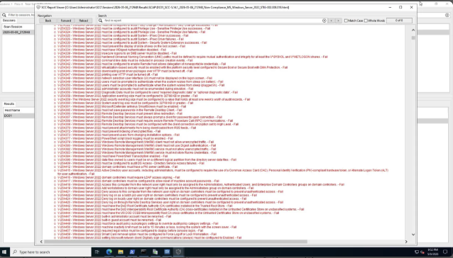

Username: ahawk013 | Platform: Windows Server 2022 | Environment: UTM on Apple Silicon
This portfolio documents a hands-on Windows Server 2022 government sysadmin lab built from scratch to simulate real DoD and federal IT environments. Every chapter covers a skill set directly relevant to government and cleared contractor roles.
The lab runs on Windows Server 2022 Standard Evaluation virtualized in UTM on Apple Silicon Mac, with a fully functional Active Directory domain (local.lab), domain controller (DC01), and enterprise services including DNS, DHCP, WSUS, and STIG compliance tooling.
Each chapter produces a professional Word document with full technical documentation and screenshots — ready to share with hiring managers and cleared employers.
SCAP Compliance Checker 5.14.1 was run against DC01 using the Microsoft Windows Server 2022 STIG — Version 2, Release 8 (Benchmark Date: 01 April 2026). The scan covers 282 security controls and completed in 18 minutes 54 seconds. A 46% baseline score on an unhardened server is normal — remediation is covered in Chapter 9.
// To display screenshots: upload images to your GitHub repo in a folder named ch8-screenshots/ with the filenames below. They will appear automatically.

Screenshot 01 01_WSUS_install_success.png
Screenshot 03 03_WSUS_console_dashboard.png
Screenshot 05 05_WSUS_computer_groups.png
Screenshot 08 08_WSUS_GPO_intranet_update_server.png
Screenshot 16 16_STIG_Viewer_WS2022_loaded.png
Screenshot 21 21_SCC_scan_complete.png
Screenshot 23 23_SCC_noncompliance_report.png
Screenshot 24 24_SCC_failed_findings.png